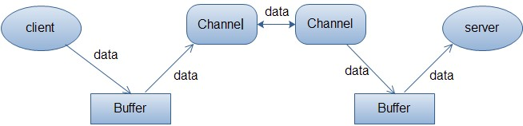
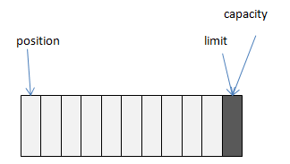
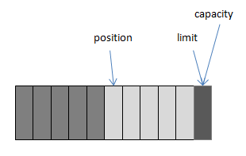
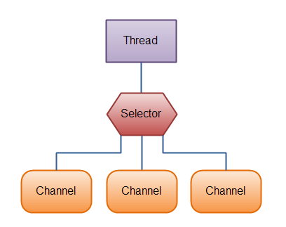

1 NIO和BIO的区别2 核心组件2.1 Buffer2.1.1 内部模型2.1.2 allocate2.1.2 allocateDirect2.1.3 向ByteBuffer写入5个字节2.1.4 flip2.1.5 clear2.1.6 compact2.1.7 position2.1.8 limit2.1.9 mark 和 reset2.1.10 rewind2.2 Channel2.2.1 java Stream 和 NIO Channel 对比2.2.2 Channel 类型2.2.3 使用示例2.2.3.1 文件IO2.2.3.1.1 读取文件2.2.3.1.2 写入文件2.2.3.2 TCP2.2.3.2.1 服务端2.2.3.2.2 客户端2.2.3.3 UDP2.2.3.3.1 发送端2.2.3.3.2 接收端2.3 Selector2.3.1 使用Selector2.3.1.1 创建Selector2.3.1.2 将Channel注册到Selector2.3.1.3 获取事件2.3.2 示例
1 NIO和BIO的区别
BIO是面向流的，NIO是面向缓冲区的。
BIO面向流意味着每次从流中读一个或多个字节，直至读取所有字节，它们没有被缓存在任何地方。此外，它不能前后移动流中的数据。如果需要前后移动从流中读取的数据，需要先将它缓存到一个缓冲区。
NIO则将数据读取到一个它稍后处理的缓冲区，需要时可在缓冲区中前后移动。这就增加了处理过程中的灵活性。但是，还需要检查是否该缓冲区中包含所有您需要处理的数据。而且，需确保当更多的数据读入缓冲区时，不要覆盖缓冲区里尚未处理的数据。
BIO的各种流是阻塞的，而NIO支持非阻塞模式IO。
在BIO中，当一个线程调用
read()或write()时，该线程被阻塞，直到有一些数据被读取，或数据完全写入。该线程在此期间不能再干任何事情了。NIO的非阻塞模式，使一个线程从某通道发送请求读取数据，但是它仅能得到目前可用的数据，如果目前没有数据可用时，就什么都不会获取。而不是保持线程阻塞，所以直至数据变的可以读取之前，该线程可以继续做其他的事情。 非阻塞写也是如此。一个线程请求写入一些数据到某通道，但不需要等待它完全写入，这个线程同时可以去做别的事情。 线程通常将非阻塞IO的空闲时间用于在其它通道上执行IO操作，所以一个单独的线程现在可以管理多个输入和输出通道（channel）。
2 核心组件
2.1 Buffer
Buffer，缓冲区，实际上是一个数组容器。
Channel从网络或者文件等读取的数据都必须经过Buffer。

Java nio提供了多种Buffer实现，如ByteBuffer、CharBuffer、DoubleBuffer、FloatBuffer、IntBuffer、LongBuffer、ShortBuffer，分别对应各种基本数据类型。还有MappedByteBuffer、HeapByteBuffer、DirectByteBuffer等适用于特殊场景的实现。
2.1.1 内部模型
Buffer类中定义了四个变量：capacity、position、limit、mark。
| 变量 | 说明 |
|---|---|
| capacity | 缓冲区数组的总长度，默认大小为数组长度 |
| position | 下一个要操作的元素的位置，默认为0 |
| limit | 缓冲区数组中不可操作的下一个元素的位置：limit<=capacity，默认大小为数组长度 |
| mark | 用于记录当前position，默认为-1 |
下面，以ByteBuffer为例，通过对其常用方法进行说明，来了解上述四个变量是如何工作的。
2.1.2 allocate
分配指定大小的HeapByteBuffer，HeapByteBuffer属于堆缓冲区，是ByteBuffer的一种实现，也是我们常用的ByteBuffer实现，因为是在java堆内存中，所以其能被快速分配，并且能被垃圾收集器收集释放。
2.1.2 allocateDirect
分配指定大小的DirectByteBuffer，DirectByteBuffer不在堆内存中，所以不存在由于垃圾收集引起的复制操作。但是其主要缺点是分配和释放比较昂贵，并且需要程序员手动释放。
在调用ByteBuffer.allocate(11)后，ByteBuffer内部数组可以用下面的图示表示：

此时position=0，mark=-1，capacity=limit=10。
2.1.3 向ByteBuffer写入5个字节

此时position=5，mark=4，capacity=limit=10。
2.1.4 flip
通俗来理解，flip方法就是标记出当前数组中可以读取的数据。在使用中，通常要先调用flip方法，标记出ByteBuffer中可读取的数据起始和结束位置，然后将数据读取到channel中。
xxxxxxxxxxpublic final Buffer flip() {limit = position;position = 0;mark = -1;return this;}
承接上面的图示:

2.1.5 clear
clear方法会将position、limit、mark全部置为初始值。此时如果数组中还有未读数据，那么这些数据就会被”遗忘”，无法再获取到这些数据，并且在向数组中写入新数据时，会覆盖这些遗留数据。
xxxxxxxxxxpublic final Buffer clear() {position = 0;limit = capacity;mark = -1;return this;}
2.1.6 compact
compact方法会将数组中的未读数据拷贝到数组起始处，然后将position设置为最后一位未读数据的下一步，在向数组写入新数据时，会在position处开始写入，不会覆盖掉原有的未读数据。
xxxxxxxxxxpublic ByteBuffer compact() {System.arraycopy(hb, ix(position()), hb, ix(0), remaining());position(remaining());limit(capacity());discardMark();return this;}
2.1.7 position
将position置于newPosition位置，可用于读取newPosition到limit部分的数据。
xxxxxxxxxxpublic final Buffer position(int newPosition) {if ((newPosition > limit) || (newPosition < 0))throw new IllegalArgumentException();position = newPosition;if (mark > position) mark = -1;return this;}
2.1.8 limit
limit方法用于更新limit位置，可以用于限制读取position到newLimit之间的数据。
xxxxxxxxxxpublic final Buffer limit(int newLimit) {if ((newLimit > capacity) || (newLimit < 0))throw new IllegalArgumentException();limit = newLimit;if (position > limit) position = limit;if (mark > limit) mark = -1;return this;}
2.1.9 mark 和 reset
mark方法会标记当前position。
xxxxxxxxxxpublic final Buffer mark() {mark = position;return this;}
reset方法用于恢复用mark()方法标记的position位置。
xxxxxxxxxxpublic final Buffer reset() {int m = mark;if (m < 0)throw new InvalidMarkException();position = m;return this;}
2.1.10 rewind
rewind方法会重置position，limit保持不变，可用于重复读取数组中的数据。
xxxxxxxxxxpublic final Buffer rewind() {position = 0;mark = -1;return this;}
2.2 Channel
通常来说，所有的 NIO 的 I/O 操作都是从 Channel 开始的。一个 channel 类似于一个 stream。
2.2.1 java Stream 和 NIO Channel 对比
同一个 Channel 中可以执行读和写操作，然而同一个 Stream 仅仅支持读或写。
Channel 可以异步地读写，而 Stream 是阻塞的同步读写。
Channel 总是从 Buffer 中读取数据，或将数据写入到 Buffer 中。
2.2.2 Channel 类型
FileChannel：文件操作DatagramChannel：UDP 操作SocketChannel：TCP 操作ServerSocketChannel：TCP 操作，使用在服务器端这些通道涵盖了 UDP 和 TCP网络 IO以及文件 IO。
2.2.3 使用示例
2.2.3.1 文件IO
2.2.3.1.1 读取文件
xxxxxxxxxxpublic static void read() throws Exception {RandomAccessFile file = new RandomAccessFile("C:\\Users\\Administrator\\Desktop\\jstatd.all.policy","rw");FileChannel channel = file.getChannel();ByteBuffer buffer = ByteBuffer.allocate(10);int i = channel.read(buffer);while (i != -1){buffer.flip();while (buffer.hasRemaining()){System.out.print((char) buffer.get());}buffer.clear();i = channel.read(buffer);}channel.close();file.close();}
2.2.3.1.2 写入文件
xpublic static void write() throws Exception{RandomAccessFile file = new RandomAccessFile("C:\\Users\\Administrator\\Desktop\\aaa.txt","rw");FileChannel channel = file.getChannel();String str = "i am writing some text into file! now=" + System.nanoTime();ByteBuffer buffer = ByteBuffer.allocate(1024);buffer.clear();buffer.put(str.getBytes("utf-8"));buffer.flip();while (buffer.hasRemaining()){channel.write(buffer);}channel.close();file.close();}
2.2.3.2 TCP
2.2.3.2.1 服务端
xxxxxxxxxxpublic static void main(String[] args) throws Exception {ServerSocketChannel serverSocketChannel = ServerSocketChannel.open();serverSocketChannel.configureBlocking(false);serverSocketChannel.bind(new InetSocketAddress("127.0.0.1",8181));while (true){SocketChannel socketChannel = serverSocketChannel.accept();if(socketChannel != null){System.out.println("["+System.nanoTime()+"] 服务器接收到客户端消息:");ByteBuffer readBuffer = ByteBuffer.allocate(10);readBuffer.clear();int i = socketChannel.read(readBuffer);while (i != -1){readBuffer.flip();while (readBuffer.hasRemaining()){System.out.print((char) readBuffer.get());}readBuffer.clear();i = socketChannel.read(readBuffer);}}}}
2.2.3.2.2 客户端
xxxxxxxxxxpublic static void main(String[] args) throws Exception {SocketChannel socketChannel = SocketChannel.open();socketChannel.configureBlocking(false);socketChannel.connect(new InetSocketAddress("127.0.0.1",8181));while (socketChannel.finishConnect()){ByteBuffer writeBuffer = ByteBuffer.allocate(1024);writeBuffer.clear();writeBuffer.put(("client request : "+System.nanoTime()).getBytes());writeBuffer.flip();while (writeBuffer.hasRemaining()){socketChannel.write(writeBuffer);}}}
2.2.3.3 UDP
2.2.3.3.1 发送端
xxxxxxxxxxpublic static void send() {try {DatagramChannel channel= DatagramChannel.open();int i = 1;while (i<=20){String str = "["+System.nanoTime()+"] udp message";ByteBuffer buffer = ByteBuffer.allocate(50);buffer.clear();buffer.put(str.getBytes());buffer.flip();while (buffer.hasRemaining()){channel.send(buffer,new InetSocketAddress("127.0.0.1",8181));}buffer.clear();System.out.println("---send udp message successfully!");i++;}}catch (Exception e){e.printStackTrace();}}
2.2.3.3.2 接收端
xxxxxxxxxxpublic static void receive() {try {DatagramChannel channel= DatagramChannel.open();channel.bind(new InetSocketAddress(8181));int i = 1;while (i<=20){ByteBuffer buffer = ByteBuffer.allocate(50);buffer.clear();channel.receive(buffer);System.out.print("receive udp message :");buffer.flip();while (buffer.hasRemaining()){System.out.print((char) buffer.get());}buffer.clear();System.out.println();i++;}}catch (Exception e){e.printStackTrace();}}
2.3 Selector
Selector 允许一个单一的线程来操作多个 Channel。
如果我们的应用程序中使用了多个 Channel，那么使用 Selector 很方便的实现这样的目的，但是因为在一个线程中使用了多个 Channel，因此也会造成了每个 Channel 传输效率的降低。
使用 Selector 的图解如下:

2.3.1 使用Selector
2.3.1.1 创建Selector
xxxxxxxxxxSelector selector = Selector.open();
2.3.1.2 将Channel注册到Selector
xxxxxxxxxxchannel.register(selector,selectorKey)或channel.register(selector,selectorKey,attObject)
要将channel注册到Selector前必须保证channel是非阻塞的，register方法的第二个参数指定了我们感兴趣的事件，有四种可选值：
xxxxxxxxxxSelectionKey.OP_CONNECT //channel已连接SelectionKey.OP_ACCEPT //channel确认,用于tcp服务端SelectionKey.OP_READ //channel可读SelectionKey.OP_WRITE //channel可写
如果想要一次性指定多个感兴趣的事件，可以使用”|”运算来组合:
xxxxxxxxxxint interestSet = SelectionKey.OP_READ | SelectionKey.OP_WRITE;
注意：一个channel仅可以注册到一个Selector一次，后续注册会覆盖掉之前的注册信息。register方法可以通过第三个参数传入一个附加对象，并且能够在事件发生后获取到该对象。
2.3.1.3 获取事件
通过selector.selectedKeys()可以获取所有注册到Selector的所有事件，并可以通过isAcceptable()、isConnectable()、isReadable()、isWritable()来判断事件是否已经准备就绪，并且能够通过channel()方法获取对应的channel，如果存在附加对象，可以通过attachment()方法获取。
注意：在通过selectedKeys()方法获取到事件集合后，如果对该事件进行了处理，那么Selector并不会删除该事件，需要手动删除。
也可以通过select()方法获取准备就绪的事件个数，该方法默认阻塞等待事件就绪。可以通过select(long timeout)方法设置等待时间，也可以通过selectNow()获取，该方法不会阻塞，立刻返回结果。
2.3.2 示例
xpublic static void main(String[] args) throws IOException {Selector selector = Selector.open();ServerSocketChannel serverSocketChannel = ServerSocketChannel.open();serverSocketChannel.configureBlocking(false);serverSocketChannel.bind(new InetSocketAddress("127.0.0.1",8181));//注册事件serverSocketChannel.register(selector,SelectionKey.OP_ACCEPT);while (true){if(selector.selectNow() == 0){//如果没有事件准备就绪,继续下一次循环continue;}Iterator<SelectionKey> selectionKeys = selector.selectedKeys().iterator();while (selectionKeys.hasNext()) {SelectionKey key = selectionKeys.next();if (key.isAcceptable()) {System.out.println("新的客户端连接成功!");SocketChannel channel = ((ServerSocketChannel)key.channel()).accept();channel.configureBlocking(false);channel.register(key.selector(),SelectionKey.OP_READ,ByteBuffer.allocate(1024));} else if (key.isReadable()) {System.out.print("读取客户端消息:");ByteBuffer buffer = (ByteBuffer) key.attachment();buffer.clear();SocketChannel socketChannel = (SocketChannel) key.channel();socketChannel.read(buffer);buffer.flip();while (buffer.hasRemaining()) {System.out.print((char) buffer.get());}buffer.clear();}selectionKeys.remove();}}}